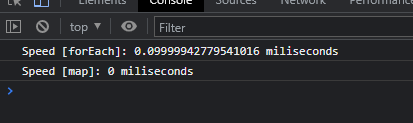

متد شیفت ()shift
- متد ()shift اولین عنصر آرایه را حذف کرده و تمام عنصرهای دیگر را به اول آرایه شیفت میدهد.
const miveha=["sib","golabi","porteghal","kiwi"];
miveha.shift();
RESULT: miveha=["golabi","porteghal","kiwi"]
- متد شیفت میتواند رشته یا عنصری که جابجا شده بود را برگرداند یا return کند.
const miveha=["sib","golabi","porteghal","kiwi"];
let X=miveha.shift();
RESULT: X="sib"
تفاوت متد شیفت با متد پاپ ()pop چیست؟
- شیفت اولین عنصر آرایه و پاپ آخرین عنصر آرایه را حذف میکند
- اگر آرایه خالی باشد هر دو متد پاپ و شیفت عبارت تعریف نشده را برمیگردانند، اما اگر تنها یک عنصر در آرایه
وجود داشته باشد؛ پاپ همان عنصر را برمیگرداند درحالیکه شیفت تعریف نشده برمیگرداند.
متد آنشیفت ()unshift
- متد ()unshift یک عنصر جدید به آرایه اضافه میکند (در ابتدای آرایه)، و عنصرهای قدیمیتر را یک خانه به جلو
منتقل میکند.
در انتها متد ()unshift طول آرایهی جدید را برمیگرداند.
const miveha=["sib","golabi","porteghal","kiwi"];
miveha.unshift("limoo");
RESULT: miveha=["limoo","sib","golabi","porteghal","kiwi"]
تفاوت متد آنشیفت با متد پوش ()push چیست؟
- متد آنشیفت عنصر جدید را به ابتدای آرایه اضافه میکند درحالیکه متد پوش عنصر را به انتهای آرایه اضافه
میکند.
متد مپ ()map
- این متد، یک سری عملیات روی هر کدام از عناصر آرایه اعمال کرده و خروجی را در یک آرایه جدید میریزد.
const numbers =[5, 2, 25];
const mulBy2 = numbers.map(item => item * 2);
RESULT: [10, 4, 50];
- درست شبیه ()find، این متد هم یک تابع به عنوان ورودی گرفته و خود فانکشن یا تابع ۳ آرگومان دارد.
arr.map(function(element, index, arr) { });
- مپ تابع را برای عناصر خالی اجرا نمیکند و آرایه اصلی را تغییر نمیدهد.
- تابع داده شده به متد مپ میبایست همیشه خروجی (return) داشته باشد. در غیر این صورت خروجی برای عنصر درحال
پردازش undefined است.
تفاوت متد مپ با متد فور ایچ ()forEach چیست؟
- مقدار برگشتی: متد فور ایچ عبارت تعریف نشده برمیگرداند و مپ یک آرایه جدید با عناصر تبدیل شده
برمیگرداند. حتی اگر هر دو یک کار را انجام دهند، مقدار بازگشتی متفاوت باقی میماند.
- قابلیت ضمیمه کردن متدهای دیگر: مپ قابل زنجیره است. این به این معنی است که میتوانید پس از اجرای متد مپ
روی یک آرایه، ()reduce()، sort()، filter و غیره را ضمیمه کنید.
این کار را نمیشود با فور ایچ انجام داد زیرا تعریف نشده برمیگردد.
- تغییرپذیری: متد ()map یک آرایه کاملاً جدید با عناصر تبدیل شده و همان مقدار داده را برمیگرداند. در مورد
()forEach، حتی اگر تعریف نشده برگردد، آرایه اصلی را با callback تغییر میدهد.
بنابراین، به وضوح میبینیم که ()map بر تغییرناپذیری تکیه دارد و ()forEach یک متد mutator است.
- سرعت عملکرد: سرعت عملکرد مپ به مراتب بالاتر از فور ایچ است.
const myAwesomeArray = [1, 2, 3, 4, 5];
const startForEach = performance.now();
myAwesomeArray.forEach(x => (x + x) * 10000000000);
const endForEach = performance.now();
console.log(`Speed [forEach]: ${endForEach - startForEach} miliseconds`);
const startMap = performance.now();
myAwesomeArray.map(x => (x + x) * 10000000000);
const endMap = performance.now();
console.log(`Speed [map]: ${endMap - startMap} miliseconds`);
